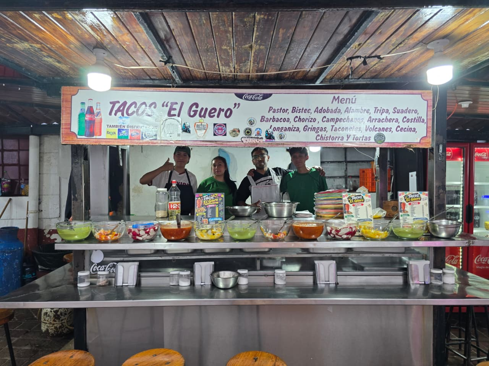
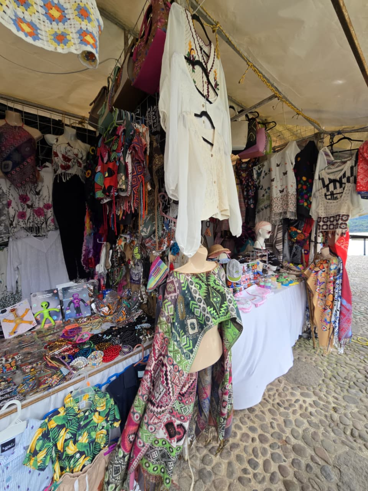

El Callejón del Hambre (oficialmente conocido como Callejón del Arco) es el punto de referencia más popular para comer comida callejera en el centro de Valle de Bravo, Estado de México.
● Dirección: El Arco 100, Centro, 51200 Valle de Bravo, Estado de México (cerca de la iglesia de San Francisco de Asís).
●Horarios: Abierto todos los días; generalmente desde las 9:00 a.m. para el desayuno o antojitos hasta la madrugada (alrededor de las 2:00 a.m. a 2:30 a.m.)
●Forma de pago: Principalmente en efectivo (cash-only).
¿Qué comer?
●Taquerías: Hay entre 5 y 7 puestos de tacos con más de 40 años de tradición.
/Especialidades:
●Tacos al pastor, bistec, barbacoa, chorizo, longaniza, costilla, alambre, suadero y tripa.
●El famoso taconete (un taco muy bien servido con abundante carne y tortilla de harina, similar a una gringa).

En la zona de La Alameda (Alameda del Bicentenario) o tambien conocida como otra parte de la estrella y sus calles aledañas en Valle de Bravo, puedes encontrar excelentes opciones para comprar ropa, que van desde artesanías locales y prendas de lana tradicionales hasta boutiques de diseño y trajes de baño.
●Ubicado justo a unos pasos del parque. Es el lugar ideal si buscas ropa y accesorios de lana de temporada (perfectos para la época invernal), además de sombreros, gorras y textiles típicos elaborados por artesanos de la región.
●Se encuentra a pocos minutos caminando sobre la Av. Benito Juárez. Aunque es un mercado artesanal general, varios locales ofrecen ropa típica, mantas y prendas bordadas a precios muy competitivos directamente de los productores.

Las letras grandes o monumentales de Valle de Bravo se encuentran en la Alameda del Bicentenario o tambien conocido como otra parte de La Estrella, un parque emblemático ubicado justo frente al embarcadero municipal.
●Es el punto clásico si buscas tomarte la típica foto de recuerdo con el nombre de este Pueblo Mágico y el lago de fondo.
●La ubicación exacta es sobre la Avenida Fray Gregorio Jiménez de la Cuenca, en la zona centro de Valle de Bravo.
●Además de las letras turísticas, este espacio cuenta con andadores, áreas verdes, un skate park y la estructura conocida como "La Velaria", la cual suele albergar importantes eventos culturales como el popular Festival de las Almas.
"El Centro de Valle de Bravo, es un lugar caracteristico del municipio donde encuentas lugares gastronomicos y turisticos."